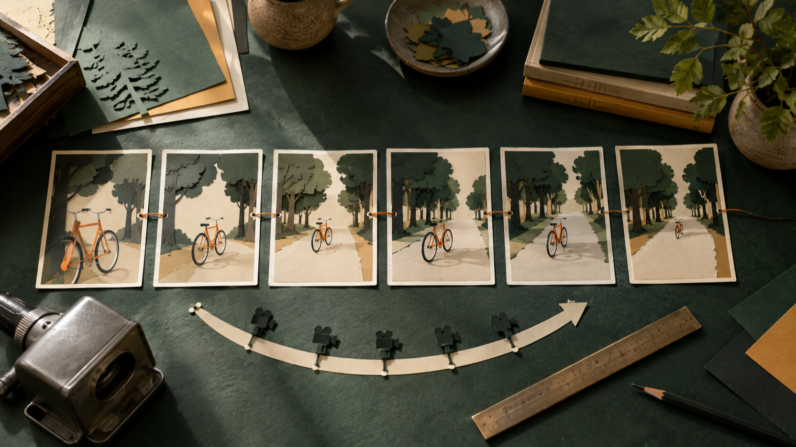

Prompt per MiniMax H3 immagine-video: progettare riferimenti, azione e controlli
Un prompt immagine-video utile non comincia da una lista di aggettivi: comincia da una decisione su che cosa deve restare riconoscibile e che cosa deve cambiare. Questa guida propone una routine di progettazione per chi parte da una fotografia o da un’illustrazione di riferimento e vuole descrivere un’azione breve, una scelta di camera e criteri di controllo prima dell’invio.
Trasparenza: sono il fondatore di FLAQ e ho quindi un rapporto commerciale con FLAQ. Questo articolo presenta la relativa risorsa MiniMax H3 immagine-video e le risorse di prompt; non riporta test indipendenti dell’output.
Una metafora editoriale della preparazione: definire il riferimento e il movimento prima di formulare il prompt.
Partire dal riferimento, non dall’effetto
Tratta l’immagine iniziale come una breve specifica visiva. Prima di chiedere movimento, annota ciò che non deve cambiare: soggetto principale, ambiente, direzione della luce, rapporto fra gli oggetti e punto da cui la camera osserva la scena. Non è necessario trasformare l’immagine in una descrizione enciclopedica; è più utile scegliere pochi elementi verificabili.
Per esempio, invece di chiedere semplicemente “una bici che si muove”, si può fissare: bici arancione, strada alberata, luce laterale del tardo pomeriggio, inquadratura all’altezza del manubrio. Questi vincoli rendono leggibile la richiesta e rendono più semplice il controllo successivo. La pagina MiniMax H3 image-to-video di FLAQ documenta un flusso immagine-video con primo fotogramma richiesto e fotogramma finale opzionale: il riferimento iniziale merita quindi di essere scelto con cura.
Costruire il prompt in cinque blocchi
1. Riferimento e invarianti
Apri con il soggetto e gli aspetti da conservare. Nomina un solo soggetto dominante e indica quali tratti devono rimanere stabili. Evita di introdurre nel testo dettagli che l’immagine non contiene, se non sono davvero necessari alla scena.
2. Un’azione osservabile
Scegli un’azione con inizio, sviluppo e arresto: avanzare di pochi metri, voltarsi verso una finestra, sollevare un oggetto, passare dietro un elemento in primo piano. Un verbo concreto è più utile di “rendere dinamico”. Per una durata breve, una sola azione principale è spesso più controllabile di una catena di eventi.
3. Camera e inquadratura
Specifica il punto di vista prima del movimento di camera: campo medio laterale, primo piano fermo, vista dall’alto, macchina che accompagna lentamente il soggetto. Poi descrivi una sola traiettoria, come una panoramica lenta o un lieve avvicinamento. Non serve promettere un risultato: questa parte è un’intenzione di regia da confrontare dopo la generazione.

Una metafora editoriale della sequenza: una singola azione e una sola scelta di camera rendono il controllo più leggibile.
4. Continuità e limiti
Indica cosa non deve mutare tra un momento e l’altro: colore e forma del soggetto, direzione della luce, numero di persone, geometria del luogo, posizione di un oggetto chiave. Includi anche gli elementi da evitare, per esempio nuovi cartelli, duplicazioni o cambi di abbigliamento. Sono criteri di pianificazione, non garanzie sul comportamento dell’output.
5. Controllo prima dell’uso
Concludi il prompt con una piccola lista di verifica. Chiediti se l’azione è unica, se il punto di vista è chiaro e se gli invarianti sono osservabili. Dopo la generazione, confronta il risultato con quella lista: soggetto, azione, camera, luce e continuità. Il controllo non sostituisce una prova indipendente del modello; è un modo pratico per decidere se rivedere il testo del prompt o il riferimento scelto.
Un modello di prompt da adattare
Puoi usare questa struttura come promemoria, sostituendo le parti tra parentesi con dati presenti nel tuo riferimento:
Mantieni [soggetto e tratti visivi] nell’ambiente [luogo e luce]. Mostra [un’azione principale] dall’inquadratura [punto di vista], con [un solo movimento di camera]. Conserva [invarianti di identità, scena e luce]. Evita [cambiamenti indesiderati]. Per il controllo, verifica [tre elementi osservabili].
Una possibile lettura operativa è: prima il riferimento, poi l’azione, quindi la camera, infine i limiti e la lista di controllo. Se un prompt diventa troppo fitto, togli i dettagli che non servono a distinguere la scena invece di aggiungere nuovi effetti.
Separare le fonti dai limiti dell’endpoint
La documentazione pubblica della pagina FLAQ indica per questo endpoint immagine-video un primo fotogramma obbligatorio, un fotogramma finale opzionale, durate da 5 a 15 secondi e le risoluzioni elencate 768p e 2K. Questi dati aiutano a decidere quanto sia compatta la scena da pianificare. Non uso qui il prezzo, le diciture di gratuità o 480p: la disponibilità di 480p non è confermata dalla lista di parametri della pagina.
La raccolta awesome-minimax-h3-video-prompts è una risorsa distinta per idee di prompt. Al commit f639f9d6d0a3273ca85be4461e0a1265cb481387, i file numerati contengono 84 prompt in 24 categorie. Questa delimitazione è importante: esempi del repository che parlano di audio, più riferimenti, editing, localizzazione o deployment locale non dimostrano che tali funzioni siano disponibili in questo endpoint FLAQ.
Una routine di controllo in quattro passaggi
- Rileggi il riferimento. Elenca tre elementi che devono restare uguali.
- Riduci l’azione. Conserva un solo evento centrale e un solo gesto di camera.
- Rendi visibili i vincoli. Scrivi gli elementi da mantenere e quelli da evitare in frasi separate.
- Confronta senza attribuire meriti. Verifica la lista dopo la generazione e annota cosa cambieresti nel prompt; non trasformare questa verifica interna in un giudizio di qualità indipendente.
Una metafora editoriale della chiusura: confrontare gli invarianti scelti prima di riutilizzare o rivedere un prompt.
Conclusione
Un prompt immagine-video più leggibile non richiede di predire il risultato. Richiede di decidere che cosa osservare: riferimento, azione, camera, continuità e controllo. Quando ogni blocco ha un compito preciso, è più facile accorciare la richiesta, cambiare una variabile per volta e documentare i limiti senza attribuire all’endpoint capacità che non sono state verificate.